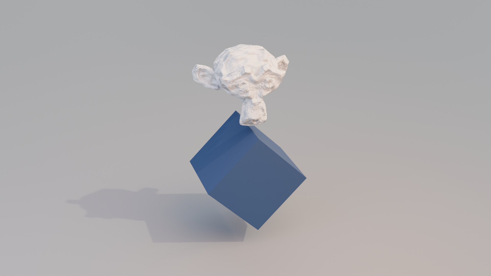
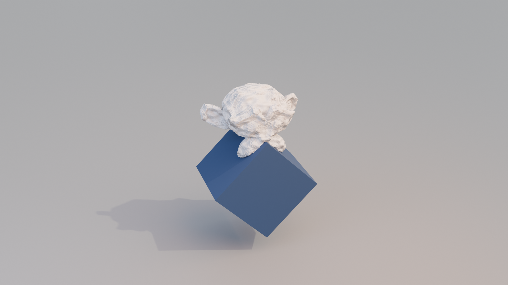
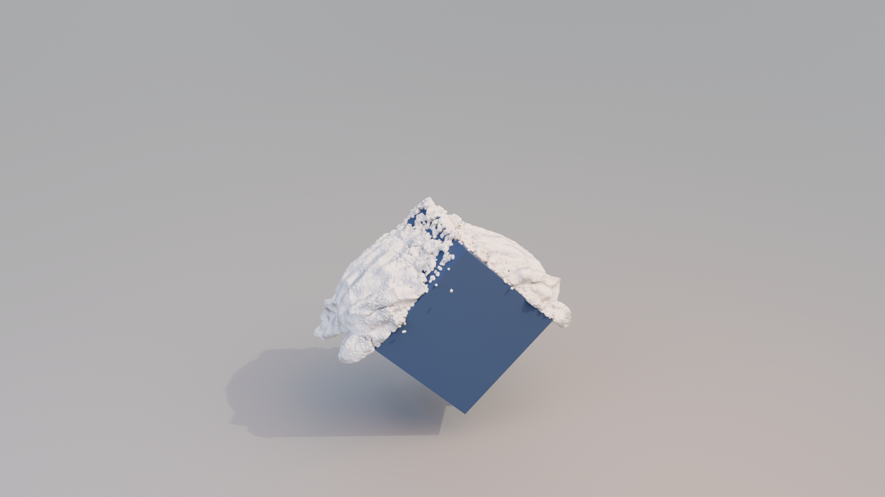
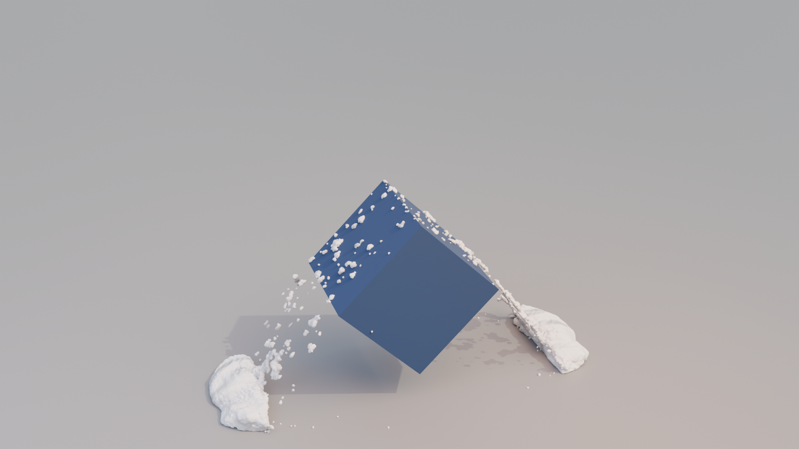

MPM Simulation#
HiPhyEngine also provides a mpm solver for simulating phenomenons such as snow, mud, and sand. HiPhyEngine implements two principle material models Snow and Sand. Despite of the material names, the material parameters can be tuned for other phenomenons, such as bread dough, mud, and other type of solid materials that have semi-fluid behaviors.
MPM simulation is separate from the Lagrangian simulation, and they will not be coupled together.
Related Objects#
Solver-
The Solver object for the simulation.
Driven Shape-
As noted in overview, in Blender, the simulation cache directly deforms the point attribute before any modifier is applied. While during export, all modifiers of the simulation object is applied. This means that having any modifiers on the simulation object that changes point position or vertex count on the simulation object will leads to a discrepancy between the simulation mesh and the simulation cache. Driven Shape is designed to bypass this limitation. If user wish to apply modifiers after the simulation result, user can apply the modifiers to the Driven Shape instead of the simulation object. When Driven Shape is set, the simulation will export from the simulation object, but deforms the Driven Shape (instead of the simulation object).
MPM Solver#
MPM Solver shares most of the same properties as the Lagrangian solver. Please refer to the Lagrangian solver for the details on the solver parameters.
MPM Grid Embedding#
MPM solver embeds the MPM particles in a background grid for simulation. The grid cell size determines the resolution of the underlying grid. It is recommended to have about 8 particles per grid cell. The grid cell size is in model unit.
Material Parameters#
| Property Name | Description | Unit | Is Mappable | Is Animatable |
|---|---|---|---|---|
| Gravity | The gravitaional acceleration | \(cm/s^2\) | YES | YES |
| External Force | Additional external force | \(10\mu N = g*cm/s^2\) | YES | YES |
| Particle Density | Density of the mpm particle | \(g/cm^3\) | YES | YES |
| Particle Radius | Radius of the mpm particle | \(cm\) | YES | YES |
| Friction Coefficient | The friction coefficient for the mpm particle | Unitless | YES | YES |
| Sticking Factor | How easy it is for the particle to stick to collision surfaces, 1 is always sticking | Unitless | YES | YES |
Sticking Factor
Sticking factor is a modifier to friction behavior. Normally, if the friction is no high enough, the particle will slide on a surface. Larger Sticking factor makes the particles more easy to stick even when the friction is low. At 1, the particle will always stick to collision surfaces regardless of friction.
Snow Parameters#
| Property Name | Description | Unit | Is Mappable | Is Animatable |
|---|---|---|---|---|
| Mu \(\mu\) | The second Lamé parameter, shear modulus, \(\mu\). It roughly corresponding to resistance to the shearing motion | \(0.1 Pa = g/cm/s^2\) | YES | YES |
| Lambda \(\lambda\) | The first Lamé parameter, \(\lambda\). It roughly corresponding to area preservation | \(0.1 Pa = g/cm/s^2\) | YES | YES |
| Stretch Yield | How much the material can stretch before breaking | Unitless | YES | YES |
| Compression Yield | How much the material can compress before hardening | Unitless | YES | YES |
| Hardening Factor | The maximum amount the material will harden under compression | Unitless | YES | YES |
Good Material Parameters
Figure 8 of the work, provided a good set of parameters to start with. Our default value matches the default value in table 2 with converted units (kg -> g, m -> cm). Another caviar is that the paper uses the Young's Modulus (\(E\)) and Poison Ratio (\(\nu\)). To convert it to Lamé parameters, user can follow this table, or the following formula: \(\lambda = \frac{E \nu}{(1 + \nu)(1 - 2\nu)}\) and \(\mu = \frac{E}{2(1 + \nu)}\). Alternatively, user can use the following rule: if Young's Modulus (\(E\)) is doubled, user just need to double both of the Lamé parameters \(\lambda\) and \(\mu\).
Stretch and Compression
The key material behavior of snow, is that it breaks while stretch, and hardens when compressed. A Stretch Yield of 0.0075 means the material can stretch 0.75% before breaking. For compression, snow instead of breaking, it become harder. Compression Yield and Hardening Factor determines how fast the snow packs up, and how hard it can get. User can experiment with Stretch Yield and Compression Yield for creating more materials that are more elastic than snow, such as bread dough.
Sand Parameters#
| Property Name | Description | Unit | Is Mappable | Is Animatable |
|---|---|---|---|---|
| Mu \(\mu\) | The second Lamé parameter, shear modulus, \(\mu\). It roughly corresponding to resistance to the shearing motion | \(0.1 Pa = g/cm/s^2\) | YES | YES |
| Lambda \(\lambda\) | The first Lamé parameter, \(\lambda\). It roughly corresponding to area preservation | \(0.1 Pa = g/cm/s^2\) | YES | YES |
| Cohesion Coefficient | How much the material internally resists deformation | \(0.1 Pa = g/cm/s^2\) | YES | YES |
| Internal Friction | How much the material internally resists shearing | Unitless | YES | YES |
Cohesion and Internal Friction
The key to sand material is the friction between different grains. Larger internal friction mimics coarse send that are easier to retain its shape, smaller internal friction are more suitable for simulating finer grains of sand that behaves more like fluid. Cohesion coefficient can be viewed as how wet the sand is. Higher Cohesion Coefficient means the send can retain its shape easier and behave more like wet send. Cohesion coefficient has the same unit as the Lamé parameters, so it will need to be around he similar order of magnitude as the Lamé parameters to start showing its effect.
Force field
MPM simulation currently does not support force fields.
Examples#
An example for a high resolution simulation of the snow material can be find here. The example also shows how to setup the rendering of the snow material with the driven shape (Credit @theworkshopwarrior for the geometry node setup).
{kind=link}

{kind=link}

{kind=link}

{kind=link}

A lower resolution simulation of the snow material with a rotating collider can be find here.